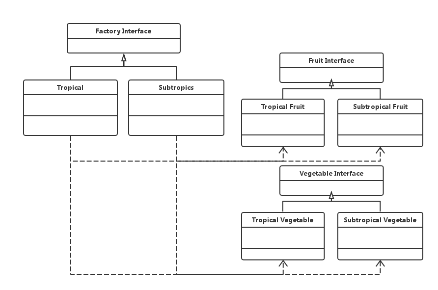

设计模式速谈：四、抽象工厂模式
上一篇文章中我们讲到了“工厂模式”，它的特征是把所有“类实例化”（包括“工厂”和“产品”）的过程全部放到了子类当中去实现。今天我们来说说“工厂系列”的最后一种模式 — “抽象工厂模式”。其实它的本质是“工厂模式”进一步抽象的结果。
在“工厂模式”中，我们的“父类”是作为某一种“具体类”的抽象而存在的，比如一个具体类叫“白种人”，那么它的抽象类为“人类”；一个具体类“白种人工厂”的抽象类即为“人类工厂”，“白种人工厂”只能生产白种人，“黄种人工厂”只能生产黄种人，以此类推。因此，在“工厂模式”中，每一个继承自“父类”工厂的具体工厂类所生产的东西是不同的。再举一个例子，比如一个抽象父类“食物工厂类”，每一种继承自它的“子类”都只能生成出自己所属的那种食物，比如饼干，面包等等。
那么，如果我想要两个继承自同一个“父类”的具体子类都可以制造生产同样的东西呢？比如两个工厂一个是“热带工厂”，另一个是“亚热带工厂”，但这两个工厂都可以生产蔬菜和水果，只是这些蔬菜和水果来自不同的“产品族”（可以理解为不同工厂）而已。我们可以理解为不同的工厂都生成同一种类型的东西，即称这些东西来自不同的“产品族”，而来自同一个工厂的不同东西之间是属于不同“产品等级”的关系。“抽象工厂模式”便是为了解决这个问题而来的，该模式的 UML 类图如下所示：

从上述类图中可以很明确的看出各个类与接口之间的继承关系，在父类的工厂接口中定义了属于不同产品族的两个工厂的共有方法和属性。对应上述类图我们在下面给出了该模式对应的示例代码：
父类抽象接口角色：
FruitInterface.java
VegetableInterface.java
FactoryInterface.java
// FruitInterface.java；
public interface Fruit {
public double getPrice();
}
// VegetableInterface.java；
public interface Vegetable {
public double getPrice();
}
// FactoryInterface.java；
public interface Factory {
// 当传入了错误的参数（比如向热带工厂提出生成亚热带产品的要求）时会抛出异常；
public Fruit produceFruit(Class<? extends Fruit> product) throws Exception;
public Vegetable produceVegetable(Class<? extends Vegetable> product) throws Exception;
}
子类抽象工厂：
TropicalFactory.java
SubtropicalFactory.java
// TropicalFactory.java；
public class TropicalFactory implements Factory {
@Override
public Fruit produceFruit(Class<? extends Fruit> product) throws Exception {
// 判断是否符合生成规范；
if (product == TropicalFruit.class) {
return (Fruit) Class.forName(product.getName()).newInstance();
} else {
// 不规范则抛出异常；
throw new Exception("We can not produce it!");
}
}
@Override
public Vegetable produceVegetable(Class<? extends Vegetable> product) throws Exception {
if (product == TropicalVegetable.class) {
return (Vegetable) Class.forName(product.getName()).newInstance();
} else {
throw new Exception("We can not produce it!");
}
}
}
// SubtropicalFactory.java；
public class SubtropicalFactory implements Factory {
@Override
public Fruit produceFruit(Class<? extends Fruit> product) throws Exception {
if (product == SubtropicalFruit.class) {
return (Fruit) Class.forName(product.getName()).newInstance();
} else {
throw new Exception("We can not produce it!");
}
}
@Override
public Vegetable produceVegetable(Class<? extends Vegetable> product) throws Exception {
if (product == SubtropicalVegetable.class) {
return (Vegetable) Class.forName(product.getName()).newInstance();
} else {
throw new Exception("We can not produce it!");
}
}
}
子类抽象水果产品：
TropicalFruit.java
SubtropicalFruit.java
// TropicalFruit.java；
public class TropicalFruit implements Fruit {
private double price = 1.82;
@Override
public double getPrice() {
return this.price;
}
}
// SubtropicalFruit.java；
public class SubtropicalFruit implements Fruit {
private double price = 1.54;
@Override
public double getPrice() {
return this.price;
}
}
子类抽象蔬菜产品：
TropicalVegetable.java
SubtropicalVegetable.java
// TropicalVegetable.java；
public class TropicalVegetable implements Vegetable {
private double price = 1.21;
@Override
public double getPrice() {
return this.price;
}
}
// SubtropicalVegetable.java；
public class SubtropicalVegetable implements Vegetable {
private double price = 1.11;
@Override
public double getPrice() {
return this.price;
}
}
客户角色：
client.java
// Client.java；
public class Client {
public static void main(String[] args) {
TropicalFactory tropicalFactory = new TropicalFactory();
try {
// 以正确的生成方式生产产品；
Fruit tropicalFruit = tropicalFactory.produceFruit(TropicalFruit.class);
System.out.println(tropicalFruit.getPrice());
// 以不正确的生成方式生产产品；
Fruit subTropicalFruit = tropicalFactory.produceFruit(SubtropicalFruit.class);
System.out.println(subTropicalFruit.getPrice());
} catch (Exception e) {
e.printStackTrace();
}
}
}